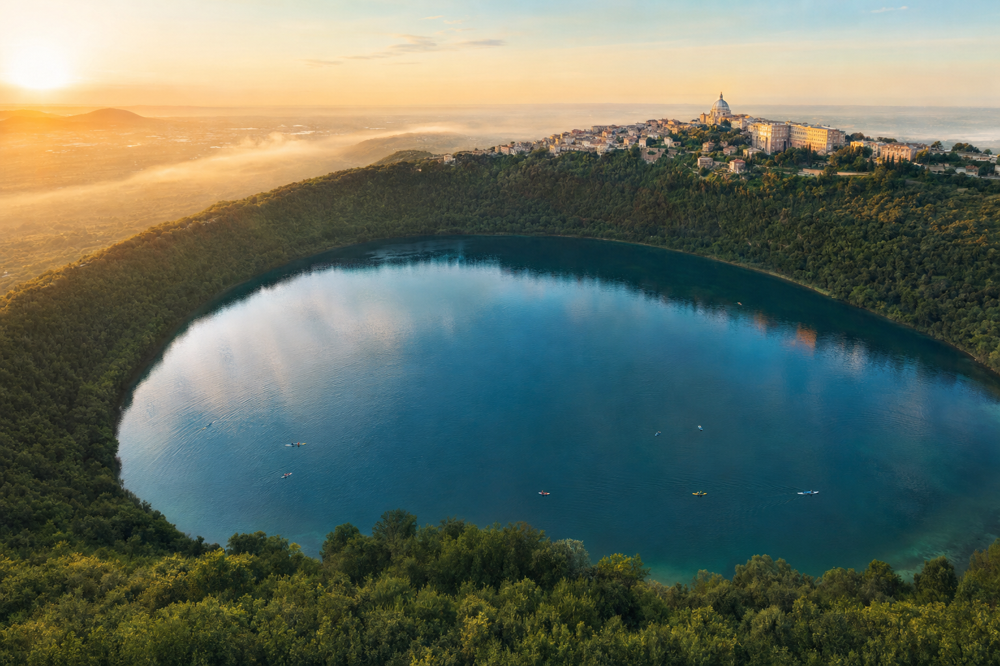
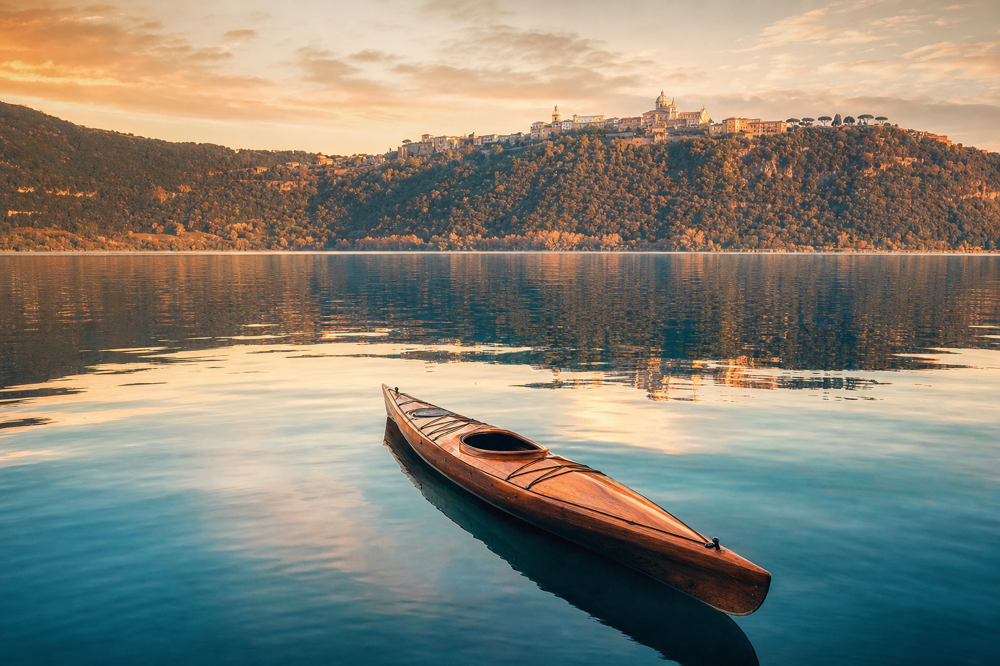

Lake Albano, the blue crater.

Lake Albano is the deepest in Lazio, formed by the union of two craters of the Colli Albani caldera. Its only outlet is artificial: the tunnel dug by the Romans in 398 BC, still working perfectly today. Engines are banned, water quality is rated good by Arpa Lazio, and the shoreline can be walked in about four hours.

Season from 1 May to 30 September.
The 2026 bathing ordinance of the Municipality of Castel Gandolfo officially opens the season for almost five months. Night swimming (the so-called midnight swim), tents and animals are strictly forbidden on the free beaches. Fines range from €25 to €500.
There are serviced lidos with sunbeds, umbrellas and facilities, along with numerous free beaches along the eastern shore. Water quality is monitored regularly by Arpa Lazio and by Legambiente.
Activities on the volcanic lake.
Zero-impact water sports, panoramic trails, cycling and sport fishing. The lake is a natural gym for anyone seeking contact with the water without engine noise.
Kayak & Canoe
CK Academy rents single and double kayaks with introductory lessons. Ideal for children and beginners.

Stand Up Paddle
The most popular discipline of the past decade: paddling upright with a view of the town from the water.

Tourist boat
A crossing from one shore to the other with historical commentary. Ideal for photographing the palace from the water.

CAI 510 shoreline loop
A ring of about 10 km around the lake with modest elevation gain. Walkable in 3–4 hours, all year round.

No-kill fishing
The lake holds perch, pike, tench and whitefish. A permit is required (FIPSAS).
The crater ride
A road- or gravel-bike route along the road that circles the lake, with scenic climbs.
What not to do.
The lake is a fragile ecosystem and a protected area of the Castelli Romani Regional Park. The 2026 bathing ordinance sets out clear restrictions.
Combustion engines
Motorboats and jet skis are banned. Only pedal, oar, sail or low-impact electric craft are allowed.
Night swimming
Swimming is allowed only from first light to sunset. Fines from €25 to €500.
Tents & fires
Camping, pitching tents and lighting fires on the shore are forbidden. Only flame-free picnics are allowed.
Animals on the beach
Dogs are not allowed on free bathing beaches. They are permitted in adjacent areas, on a lead.
“Water so deep that the Romans, to drain it, had to dig a tunnel two and a half kilometres long.”Livy · Ab Urbe Condita
Book a day on the lake.
Combine a kayak rental, lunch in a fraschetta and a walk on the shoreline loop. A complete day out.